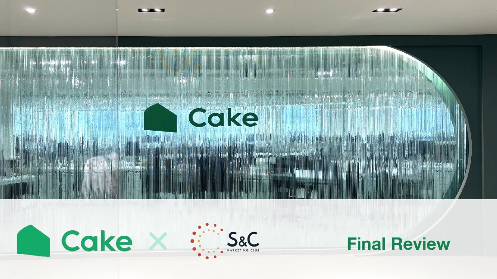

18 + 300interviews + surveys
ConsultingJob-seeker Research for Cake
- Problem
- A job platform wanted to understand how new graduates choose where to look for jobs and apply.
- Approach
- Led a 5-person cross-school team and owned the timeline. Ran in-depth interviews, then designed a survey and used regression to find which platform features drive browsing and applying.
- Outcome
- Delivered prioritised growth recommendations that were well received by the client.
Survey designSPSSRegressionProject management
